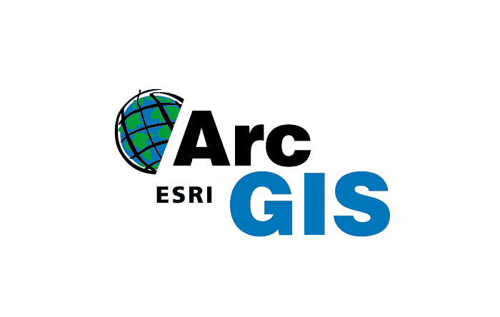
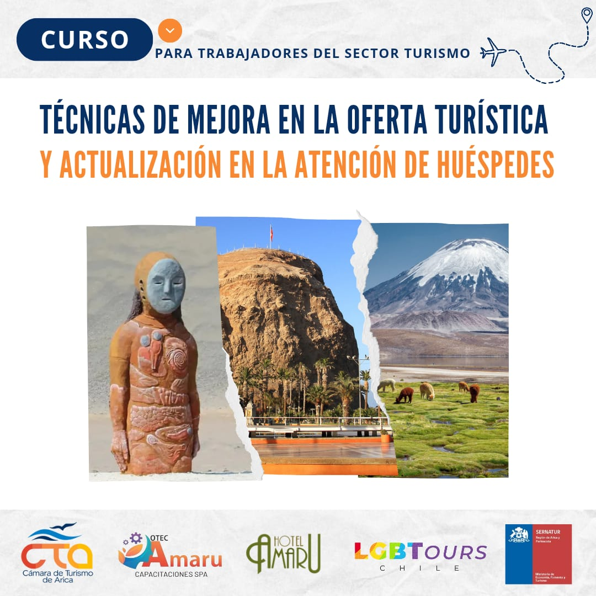

¡Ya puedes empezar a desarrollar tu futuro!

OTEC Amaru es un Centro de Capacitación Profesional comprometido con el desarrollo integral de personas y organizaciones, entregando herramientas prácticas, actuales y alineadas con las necesidades reales del mercado laboral. Nuestro propósito es impulsar el crecimiento profesional mediante formación de calidad y alto impacto.
Trabajamos con metodologías modernas, enfoque en competencias y un acompañamiento constante durante todo el proceso formativo. Creemos en la educación como motor de cambio, por eso diseñamos experiencias de aprendizaje dinámicas, inclusivas y orientadas a resultados concretos.
Trabajadores Capacitados
Cursos
Años de Experiencia
Personas Certificadas
Entregamos formación práctica y actualizada, enfocada en desarrollar competencias laborales reales.
Medimos el aprendizaje mediante evaluaciones claras, asegurando el cumplimiento de los objetivos formativos.
Otorgamos certificaciones que respaldan oficialmente las competencias adquiridas.

Es un curso práctico que integra el enfoque legal de la Ley Karin con herramientas psicosociales para prevenir, investigar y abordar el acoso laboral, entregando conocimientos aplicables desde el primer día mediante casos reales, simulaciones y análisis de situaciones concretas, orientado a personas interesadas en comprender la normativa vigente, fortalecer ambientes laborales respetuosos y adquirir herramientas éticas y efectivas para promover relaciones de trabajo seguras, justas y humanas.
Power BI Básico es un curso práctico orientado a personas sin experiencia previa que desean aprender a transformar datos en información útil para la toma de decisiones, utilizando Power BI para crear informes y dashboards interactivos mediante ejercicios reales y ejemplos aplicados, desde la carga y limpieza de datos hasta el diseño de visualizaciones claras y la publicación de reportes en la nube, dirigido a quienes buscan fortalecer su perfil profesional y adquirir una herramienta clave en el análisis de datos.
Es un curso orientado a introducir y fortalecer el uso de esta herramienta para el análisis y gestión de información geoespacial, abordando el manejo de datos, el uso de geoprocesos y la creación de flujos de trabajo automatizados mediante ModelBuilder, entregando herramientas prácticas para analizar, visualizar y optimizar información territorial, dirigido a personas interesadas en adquirir o actualizar competencias en sistemas de información geográfica y aplicar soluciones eficientes en proyectos de planificación, análisis espacial y toma de decisiones.

Es un curso orientado a comprender el Trastorno del Espectro Autista desde un enfoque de derechos humanos y perspectiva de género, entregando herramientas prácticas para promover la inclusión, el respeto y la no discriminación en contextos educativos, laborales y sociales, dirigido a personas interesadas en fortalecer sus conocimientos sobre diversidad, equidad e inclusión, y en contribuir a la construcción de entornos más justos, informados y respetuosos de las neurodiversidades.
Es un curso orientado a fortalecer la calidad de los servicios turísticos mediante la actualización de estrategias de atención al cliente, mejora de la experiencia del huésped y optimización de la oferta turística, entregando herramientas prácticas para responder a las nuevas expectativas del mercado, potenciar la fidelización y elevar los estándares de servicio en alojamientos, agencias y servicios vinculados al turismo, dirigido a personas interesadas en mejorar la experiencia del visitante y la competitividad del sector.
OTECAMARU
Rafael Sotomayor #490
Arica, Chile
Teléfono: +56 2 33073901
WhatsApp: +56 9 21216960
Correo: contacto@otecamaru.cl